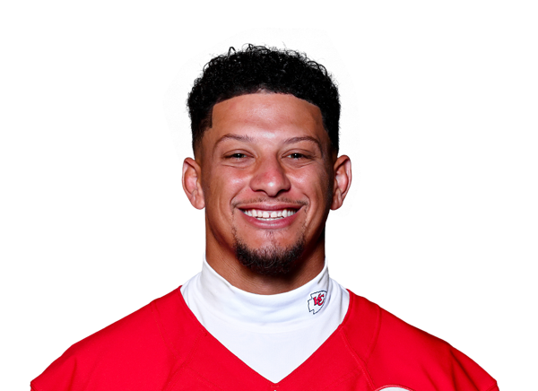

BALL KEEP
Dynasty · Redraft
Player File · QB KC

Patrick Mahomes
QB · KC · 24 · Texas Tech
2026 · through Week 4
Counting stats
Yearly
| Year | G | Snap % | Cmp | Att | Pass yds | Pass TD | INT | Rush | RuYd | RuTD | PPR |
|---|---|---|---|---|---|---|---|---|---|---|---|
| 2026 | 4 | 100.0% | 82 | 128 | 1,037 | 9 | 2 | 12 | 41 | 1 | 85.6 |
| 2025 | 14 | 97.2% | 315 | 502 | 3,587 | 22 | 11 | 64 | 422 | 5 | 296.7 |
| 2024 | 16 | 99.3% | 392 | 581 | 3,928 | 26 | 11 | 58 | 307 | 2 | 294.0 |
| 2023 | 16 | 98.0% | 401 | 597 | 4,183 | 27 | 14 | 75 | 389 | 0 | 294.2 |
Game by game · 2026
| Wk | Opp | Snap % | Cmp | Att | Pass yds | Pass TD | INT | Rush | RuYd | RuTD | PPR |
|---|---|---|---|---|---|---|---|---|---|---|---|
| 1 | vs DEN | 100.0% | 15 | 27 | 184 | 2 | 1 | 7 | 23 | 1 | 22.7 |
| 2 | vs IND | 100.0% | 32 | 47 | 382 | 3 | 0 | 2 | 17 | 0 | 29.0 |
| 3 | @ MIA | 100.0% | 20 | 24 | 246 | 2 | 1 | 1 | 1 | 0 | 16.9 |
| 4 | @ LV | 100.0% | 15 | 30 | 225 | 2 | 0 | 2 | 0 | 0 | 17.0 |
| Total | 100.0% | 82 | 128 | 1,037 | 9 | 2 | 12 | 41 | 1 | 85.6 |
Regular-season line from Sleeper. Touches are carries plus catches. TDs are passing plus rushing. Snap % is offensive snaps divided by team offensive snaps.
The tape
Patrick Mahomes is no longer the Superflex 1.01, and The Keep is not going to pretend 2018-2023 still sets the price. Keep #22, three-board average of 21. That is a QB1 you are happy to start every week and no longer trade two firsts for. The 2025 top-plays reel is still Mahomes: off-platform throws, improvisation, a Chiefs offense that can win ugly.
The market has been honest. KeepTradeCut at 30 is the 'weapons and volume dipped' camp. PFN at 13 is the 'he's still Patrick Mahomes' camp. We sit in the middle because both are true. You do not fade a quarterback this good into QB2 range. You also do not take him over Maye, Allen, Daniels, or Herbert in a 2026 startup.
Plus
- Keep #22 - still a top-25 SF QB because the ceiling weeks have not disappeared.
- Chiefs infrastructure and playoff-proof quarterbacking remain a floor other passers do not have.
Minus
- Nerds 20 / KTC 30 / PFN 13: the industry has moved him out of the 1.01 chair for good.
- 2025 passing volume and weapons (Rice sell notes on our Cold board) cap the old cheat-code years.
Board graph
Spread 7-63 · 37 sources
Every Board
Spread 7-63 · 37 sources
| Source | Rank |
|---|---|
| DLF Superflex | 7 |
| WalterFootball | 7 |
| Superflex market mash | 7 |
| RotoWire | 10 |
| FantasyPros ECR | 12 |
| Draft Sharks | 12 |
| PFN (Katz/Soppe) | 13 |
| PFF Dynasty | 13 |
| Fantasy Footballers | 15 |
| Establish The Run | 15 |
| numberFire | 15 |
| PlayerProfiler | 15 |
| Rebuild board | 15 |
| RotoBaller Dynasty | 15 |
| ESPN (Karabell) | 17 |
| The Athletic | 18 |
| Yahoo Fantasy | 18 |
| Rotoworld | 18 |
| Sleeper Superflex | 18 |
| Underdog ADP | 18 |
| 4for4 | 18 |
| FFToday | 18 |
| Dynasty Trade Calculator | 18 |
| Contender board | 18 |
| DLF ADP mix | 18 |
| Sports Illustrated Dynasty | 18 |
| FantasyData Superflex | 18 |
| Pro Football Reference | 18 |
| Footballguys | 19 |
| Fantasy Life | 20 |
| Fantasy Points Superflex | 20 |
| CBS Sports | 22 |
| Fantasy Alarm | 22 |
| RotoGrinders Superflex | 22 |
| Dynasty Nerds | 23 |
| KeepTradeCut SF | 23 |
| Mike Clay (ESPN) | 63 |
Tape · 2025 season
Patrick Mahomes Top Plays of the 2025 Season | Kansas City Chiefs
BK News
- NFL Week 4 injury roundup: Lamar Jackson, Ja’Marr Chase and Saquon Barkley among stars raising Week 5 con
- Penn State in the NFL, Week 2: Tyler Warren scores a touchdown, Saquon Barkley battles injury and more
- Chiefs’ Patrick Mahomes, Travis Kelce Make Feelings Known as Chiefs Eye Tyreek Hill Amid Injuries
- Rashee Rice’s Return Timeline Gives Patrick Mahomes Major Boost Amid Chiefs’ Wideout Crisis
- Will Patrick Mahomes play against the Las Vegas Raiders today? Latest injury update on the Kansas City Ch
- 2026 NFL QB Power Rankings: Brock Purdy holds off Patrick Mahomes for No. 1 entering Week 5
- Patrick Mahomes’ Touching Reaction to Tyquan Thornton’s Injury Reveals Deep Bond in Chiefs Locker Room
- What Happened to Patrick Mahomes? A Look at Chiefs Superstar’s Recovery From Season-Ending ACL Injury Ahead of Week 1
- Patrick Mahomes Injury Update: What’s the Latest on the Chiefs Superstar and Will He Play in Week 1?
- Raiders coach Klint Kubiak proclaimed at halftime Las Vegas would beat the Chiefs. He forgot to tell Patrick Mahomes
All player pages · The Keep · The Board · Recent deals · Hot 'n' Cold · BK News · Trade calculator